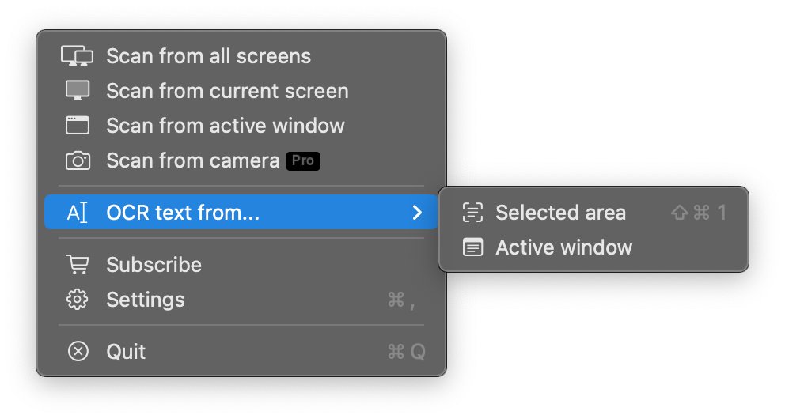
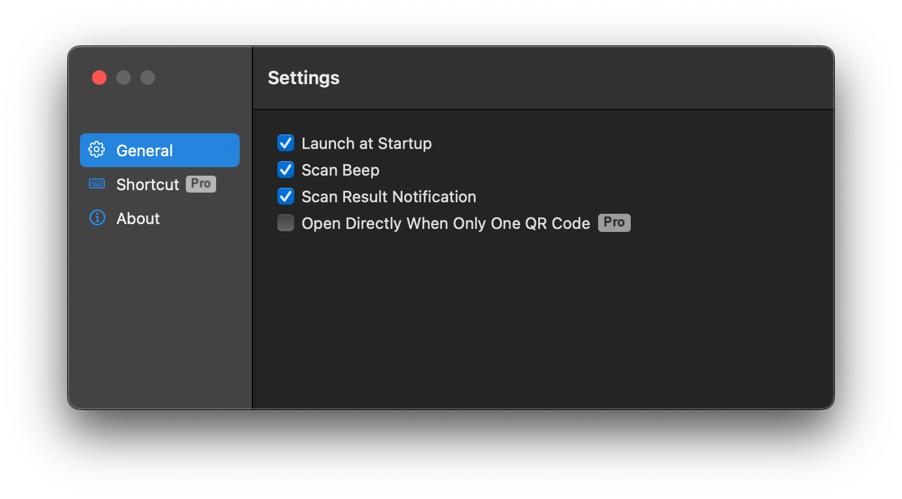

Scan any QR code on screen, instantly.
Whether it's on a webpage, a document, or buried in another app — just click the QRCodeSnap icon in your menu bar. It scans your entire screen, finds every QR code, and shows you the result. No screenshots, no app switching, no friction.
OCR Text Recognition.
If you can see it, you can select it.
Extract text from any screen region in a snap. Highlight a region, or let QRCodeSnap auto-detect text in the active window. Character-level precision: double-click to select a word, triple-click for a line, then ⌘C to copy.

Every detail, customizable.
Launch at login so it's always ready. Toggle a sound for instant feedback on every successful scan. Or get results delivered as a system notification. We've thought of every detail.

Ready to scan smarter?
Download QRCodeSnap today — free on the Mac App Store.